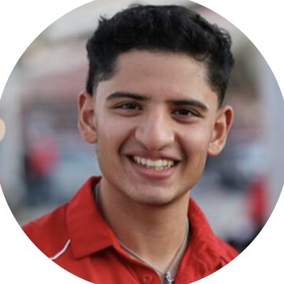
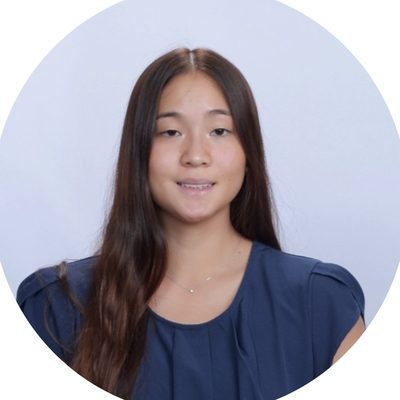

Juliette Steffensen
Co-Founder & CEO
Regulatory & IP
Complex aortic repair
Physician-modified endografts let surgeons treat aneurysms that standard devices can't. Every one is still mapped, measured, and built by hand. We're changing that.
See the problemThe problem
Some aortic aneurysms sit so close to the arteries feeding the kidneys and gut that a standard stent-graft would block them.
Surgeons modify an off-the-shelf graft on the back table, cutting openings that line up with each patient's arteries. It works. It's also slow, hard to teach, and different every time.
Because the process is so demanding, many surgeons can't offer it. Patients are left with high-risk open surgery, or no repair at all.
Repairing it before rupture is the whole game.
567 to 256 in the 2021 national registry. Surgeons are already choosing the hand-built option.
121 ± 18 minutes on the back table, before any of the anatomy mapping and planning.
Our goal
We're developing tools that make physician-modified endograft preparation faster, more standardized, and easier to learn, so more surgeons can offer this repair to more patients.
"Today" reflects case observation at one center. "Goal" is our development target, not a performance claim.
Less time planning and preparing the graft.
One repeatable method instead of one per surgeon.
Speed can't come at the cost of technical success.
Our team
Get this repair to every patient who needs it.
Co-Founder & CEO
Regulatory & IP

Co-Founder
Technical & Engineering Lead
Co-Founder
Testing & Verification Lead

Co-Founder
Device Development Lead
Co-Founder
Funding & Customer Insights Lead
Developed through the NC State / UNC MedTech Innovation & Entrepreneurship program.
Contact
Surgeons, industry partners, and investors: we want to hear from you.